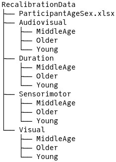
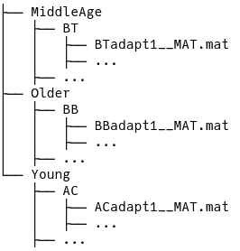

C Reproducible Results
Data doesn’t always come in a nice tidy4 format, and I had the pleasure of turning the raw experimental data into a clean data set that is ready for modeling. Sometimes the process is quick and straight forward, but other times, like with this psychometric data, it takes more effort and clever techniques. There is academic value in describing the steps I took up front to reduce the headache later.
To begin, there is a strong push in recent years for reproducible data science. Scientific methods and results should be able to be replicated by other researchers, and part of that includes being able to replicate the process that takes the raw data and produces the tidy data that is ready for analysis. Tidy data is described by Wickham and others (2014) and can be summed up by three principles
- Each variable forms a column
- Each observation forms a row
- Each type of observational unit forms a table
One problem I have come across and have been guilty of in the past is having data in a spread sheet, modifying it, and then having no way of recovering the original data. Spread sheets are a convenient way to organize, transform, and lightly analyze date, but problems can quickly arise unless there is a good backup/snapshot system in place. Data is immutable5, or at least that is the mindset that researchers must adopt in order to have truly reproducible workflows. The raw data that is collected or produced by a measurement device should never be modified without first being copied, even if for trivial reasons such as correcting a spelling mistake6.
To begin the data cleaning journey, I’ll introduce the directory system that I had been given to work with. Each task is separated into its own folder, and within each folder is a subdirectory of age groups.

Within each age group subdirectory are the subdirectories for each subject named by their initials which then contain the experimental data in Matlab files.

At this point, the data appears manageable, there is information contained in the directory structure such as task, age group, and initials, and file name contains information about the experimental block. There is also an excel file that I was later given that contains more subject information like age and sex, though that information is not used in the model. The columns of the Matlab file depends on the task, but generally contains an SOA value and a response, but no column or row name information - that was provided by the researcher who collected the data.
The next thing I did was to create a table of metadata - information extracted from the directory structure and file names combined with the the subject data and the file path. Regular expressions can be used to extract patterns from a string. With a list of all Matlab files within the RecalibrationData folder, I tried to extract the task, age group, initials, and block using the expression
"^(\\w+)/(\\w+)/(\\w+)/[A-Z]{2,3}_*[A-Z]*(adapt[0-9]|baseline[0-9]*).*"Breaking it apart, the ^(\\w+)/ matches any word characters at the start and before the next slash. Since the directory structure is Task/AgeGroup/Subject/file.mat, the regular expression should match three words between slashes. The file name generally follows the pattern of Initials__block#__MAT.mat, so [A-Z]{2,3}_*[A-Z]* should match the initials, and (adapt[0-9]|baseline[0-9]*) should match the block (baseline or adapt). This method works for \(536\) of the \(580\) individual records. For the ones it failed, it was generally do to misspellings or irregular capitalizing of “baseline” and “adapt”.
table(feat_typ[,4])
#>
#> AC AG BB BC BT CB CC CE CJ CM DB DC DD DE DTF DW
#> 13 12 13 13 13 13 10 12 13 4 13 13 7 12 12 13
#> EM ET GB GT HG IV JM JM_F JS JW KC KK LP MC MS MW
#> 13 13 13 13 13 4 12 13 13 13 13 11 7 13 13 26
#> NP PB SB SJ SJF TS TW VM WL WW YG
#> 12 13 12 26 13 13 13 13 13 12 7table(feat_atyp[,4])
#>
#> AG CC CE CM DD DTF IV JM JS KK NP SB WW YG
#> 1 3 1 9 6 1 9 1 2 2 1 1 1 6Since there is only a handful of irregular block names, they can be dealt with a separate regular expression that properly extracts the block information. Other challenges in cleaning the data include the handling of subjects with the same initials. This becomes a problem because filtering by a subject’s initials is not guaranteed to return a unique subject. Furthermore there are two middle age subjects with the same initials of “JM”, so one was also identified with their sex “JM_F”. The solution is to create a unique identifier (labeled as SID) that is a combination of age group, sex, and initials. For an experiment identifier (labeled as RID), the task and block were prepended to the SID. Each of these IDs uniquely identify the subjects and their experimental records making it easier to filter and search.
glimpse(features)
#> Rows: 580
#> Columns: 8
#> $ rid <fct> av-post1-M-f-CC, av-post1-M-f-DB, av-post1-M-f-HG, av-post1…
#> $ sid <fct> M-f-CC, M-f-DB, M-f-HG, M-f-JM, M-f-MS, M-f-SJF, M-f-TS, M-…
#> $ path <chr> "Audiovisual/MiddleAge/CC/CCadapt1__MAT.mat", "Audiovisual/…
#> $ task <chr> "audiovisual", "audiovisual", "audiovisual", "audiovisual",…
#> $ trial <fct> post1, post1, post1, post1, post1, post1, post1, post1, pos…
#> $ age_group <fct> middle_age, middle_age, middle_age, middle_age, middle_age,…
#> $ age <dbl> 39, 44, 41, 48, 49, 43, 47, 49, 49, 44, 43, 44, 48, 48, 50,…
#> $ sex <fct> F, F, F, F, F, F, F, F, F, M, M, M, M, M, M, F, F, F, F, F,…Then with the table of clean metadata, the task is simply to loop through each row, read the Matlab file given by path, add the unique ID as a column, and then join the experimental data with the metadata to create a data set that is ready for model fitting and data exploration. The full code used to generate the clean data is not yet available online, but can be shared with the committee.
The benefit of writing a script to generate the data is that others can look over my code and verify that it is doing what I intended for it to do, and I can go back to any step within the process to make changes if the need comes up. Another tool that contributed to the reproducibility is the version control management software, Git. With Git I can take a snapshot of the changes I make, and revert if necessary. This thesis is also hosted on Github, and the entire history of development can be viewed there.
References
Wickham, Hadley, and others. 2014. “Tidy Data.” Journal of Statistical Software 59 (10): 1–23.
Tidy data is described by Hadley Wickham↩︎
Mutability in computer science is the property of a data structure where its contents can be modified in place. Immutability means that the object cannot be modified without first making a copy.↩︎
If a change is made to the raw data, it should be carefully documented and reversible↩︎